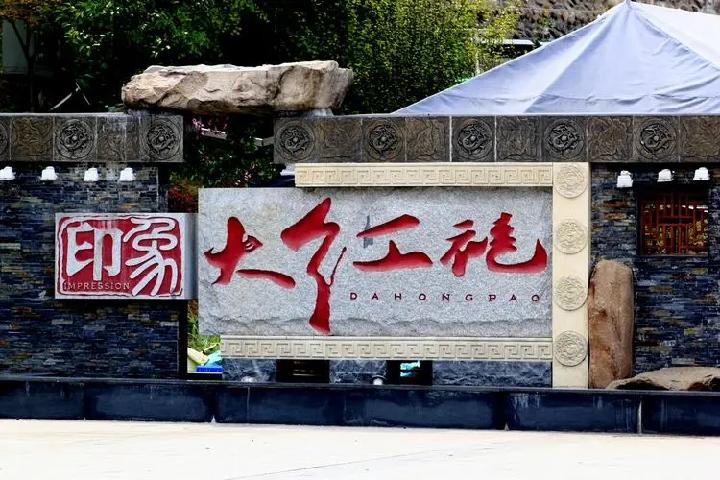
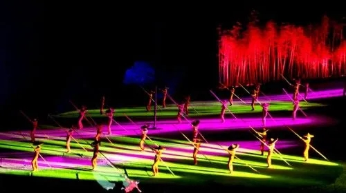
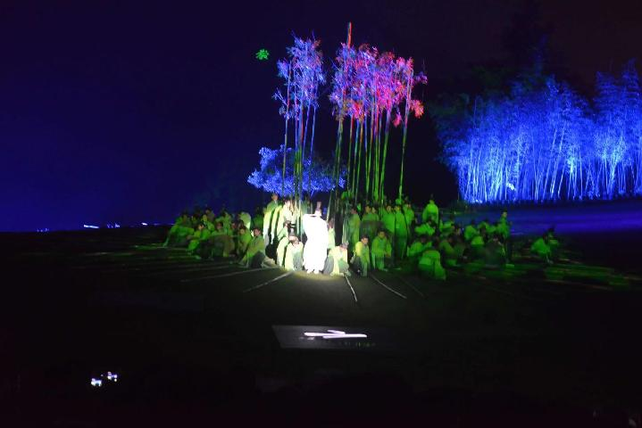
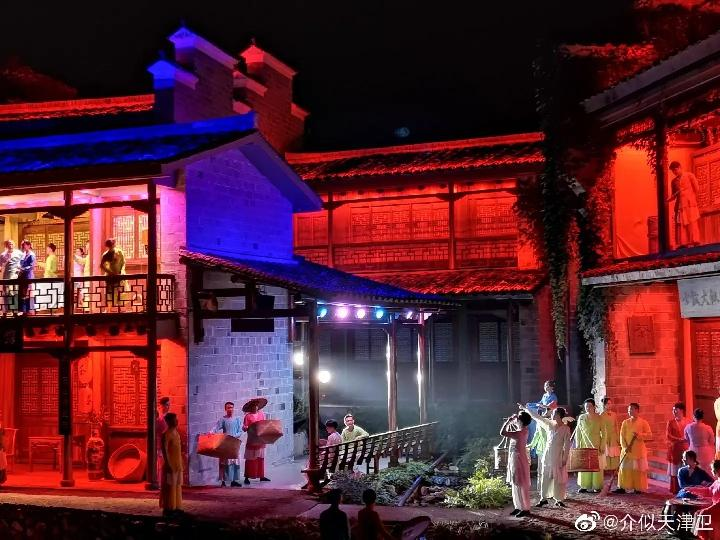
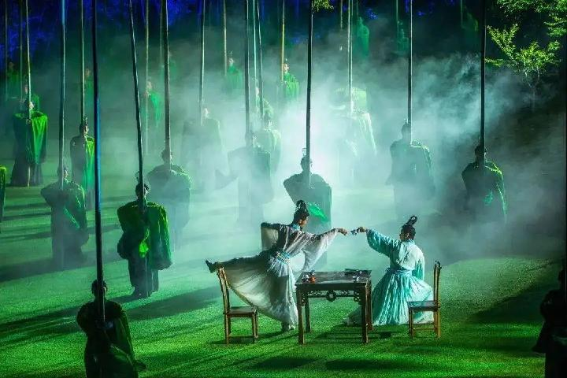
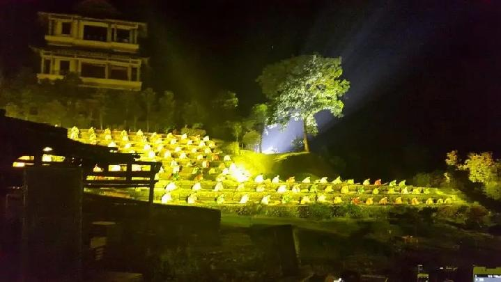
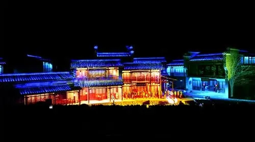

印象大红袍
国家4A级旅游景区
开放时间：19:30-21:30
《印象大红袍》是由著名导演张艺谋、王潮歌、樊跃共同组成的“印象铁三角”领衔，继《印象刘三姐》、《印象丽江》、《印象西湖》、《印象海南岛》后创作的第五个印象作品。以世界双文化遗产胜地武夷山为地域背景，以武夷茶文化为表现主题的大型山水实景演出。

巧妙地把自然景观、茶文化及民俗文化融入到一场山水实景演出中，集武夷自然山水、武夷茶文化及中国精英艺术家创作于一体，整场演出华丽璀璨，包罗万象。同时剧场地理位置也是得天独厚，位于在武夷山国家旅游度假区武夷茶博园西南角、崇阳溪东侧河岸，背倚绮丽的武夷山水，占地面积约为11.2亩。

站在此处，
秀美山水遥遥在望，
茶魁大红袍缭绕于心，
以山水为伴，尽享视听盛宴。

现场配合着灯光，以及三百六十度的旋转看台，真是一场视觉盛宴。演员众多，只有亲临现场，才能感受得到的震撼。“以茶会友”，竹林间云雾翻腾，鼓声节奏分明，演员从竹林间“旋转飞起”。画风一转，来到了玉女与大王的传说，这个传说源自于九曲溪的玉女峰与大王峰，当灯光打在了大王峰与玉女峰上，水也被灯光瞬间照亮，伴着缓缓的水流声开始了讲述大王和玉女的爱情故事。这是一个在武夷山流传了几个世纪的美丽的故事，玉女与大王为与对方的一次相遇追寻了数百年，最后化作山峰，数百年日日夜夜相对。

它是目前唯一在23个世界自然与文化双遗产地落成的印象作品，由国际著名大导演张艺谋领衔的印象艺术创作团队创作的大型山水实景演出。是全世界唯一展示中国茶文化的大型山水实景演出。全球首创的360°旋转观众席，将高新科技融入钢架式结构，设计新颖，创意独绝，打破了传统观众席固定看演出的模式，使观众在徐徐旋转中，沉浸于山与水的视听盛宴。史无前例的矩阵式实景电影，把当代电影创作引入新的方向。全球首座环景概念剧场、世界上最长的舞台这一切全新的创作理念与元素，在三位杰出艺术家历时2年，以独特视角的诠释下，让你体味山水一壶茶的武夷文化与人生境界！

剧场的表演区域由环绕在旋转观众席周围的仿古民居表演区、高地表演区、沙洲地表演区与河道表演区等共同组成。“印象铁三角”导演组曾多次走访民间，对当地民俗文化进行了实地采风，仿古民居表演区的建设借鉴了武夷山下梅古民居的建筑元素，诸如马头墙、木构、砖砌拱门等，通过这些建筑元素，与武夷山自然山水、人文文化相融合，实现与周边景观和实用性的相统一。

是以武夷山世界文化遗产之一茶文化和被列入国家第一批非物质文化遗产名录之武夷岩茶（大红袍）制作技艺为载体，糅合武夷山传统历史文化，通过艺术形式展现武夷山文化与自然双遗产的内涵，实现了武夷山自然山水、历史文化、人文艺术的绝佳融合，体现了山水、人文的和谐之美。

武夷山旅游的传统方式基本是在白天登山观景、九曲泛舟漂流，欣赏武夷之美景。印象大红袍山水实景演出的推出，打破了固有的旅游方式与审美方式，首次展示了夜色中的武夷山特别之美！从不同角度诠释着武夷之美、文化之深、山水之奇，如梦如幻，观演出如饮甘醇的大红袍，陶然无我，进入了朱老夫子“思无邪”之意境，天、地、人、山、水、茶浑然一体，和谐共融，人在景中，景随人动，好一个人间仙境，仿佛是武夷君重续虹桥，再邀世人共享文化盛宴！
地理位置：印象大红袍剧场
交通方式：公交6、7路车或的士均可到达
咨询电话：0599-5131890